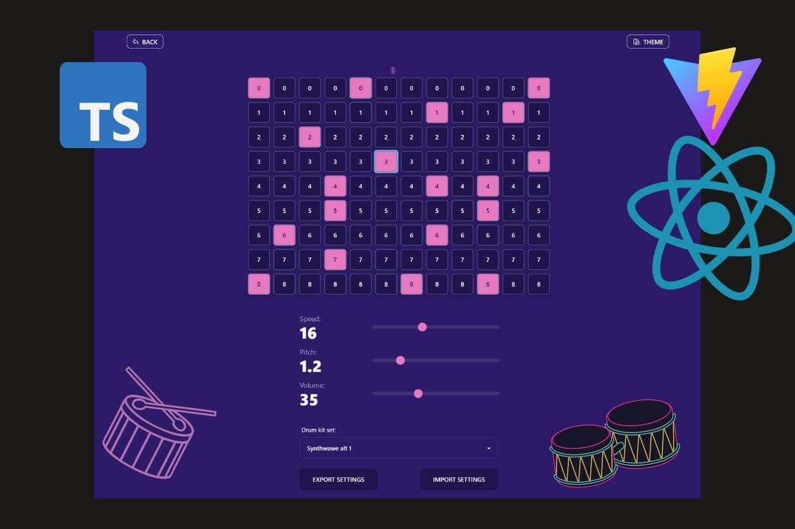

Moje projekty
V této části se můžete podívat na některé moje projekty. Některé jsou cvičné, některé se dají považovat za 100% fungující tak jak bylo zamýšleno. Některé projekty jsou staršího data, a je to na nich vidět. Ne všechny aktivně spravuju, ale aspoň jde vidět kus mé cesty.
BANG! Calc
V tomto projektu jsem vytvořil webovou, mobile frinedly aplikaci, která pomáhá jednoduše spočítat skóre na konci hry BANG!. Pokud jste někdy hru hráli, vězte, že existuje systém na udělení bodů na základě rolí a průběhu hry. Bohužel, dobrat se ke konečným bodům je někdy složité. Viz tato tabulka. V tom pomáha právě tato aplikace, kde uživatel jednoduše vybere počet kol, počet hráčů a těm přiřadí role a úspěšnost ve hře (přežil/nepřežil). Zbytek už dodělá aplikace. Lze vyzkoušet zde na netlify kde je aplikace připravena k použití. Aplikace je vytvořena pomocí reactu. Více info a zdrojový kód na GitHubu Technologie FE: React + Bootstrap
Cesťáky
Webová aplikace ve které lze vypočítat cestovní náklady na základě zadaných údajů, jako je startovní pozice a cílová pozice, cena za km aj. Aplikace je vytvořena pomocí
reactu a
firebase. Pro výpočet vzdálenosti je využita MapBox directions API. Pro získání adres je využita MapBox geocoding API.
Spustíte zde. Repo na
github zde.
Technologie
FE: React + Mantine
BE: Firebase
Kalkulačka - SVELTE
Aplikace vytvořená v září 2021, kdy jsem se začal zajímat o "framework" Svelte. Protože jsem si chtěl vyzkoušet, jak se bude ve Sveltu
pracovat,
vytvořil jsem tento malý projekt. Aplikaci lze spustit přímo zde a tady je
odkaz na repo na githubu.
Můj názor na SVELTE:
Se sveltem se mi pracovalo velmi dobře, a je to dle mého názoru skvělá technologie. Oceňuji hlavně rychlost "setupu" a celkovou jednoduchost frameworku. Výborná je také
technivká dokumentace a návody s příklady. Ve srovnání s Reactem či Angulrem, mi přijde svelte "lightweight". K tomu aby člověk začal dělat nějaký projekt stačí
stáhnout
šablonu a je to. Deploy je taky snadný, protože svelte vybuildí čístý JS soubor, který se společně s html a css souborem deployne. Jednoduché. V kombinaci s gh-pages je
to
velmi rychlý způsob vývoje a deploye vlastních menších projektů.
Technologie
FE: SVELTE + Carbon Design System + SASS
Drum & Beats
Tento projekt vznikl jako spin-off z drum machine freeCodeCamp projektu. V beat makeru lze skládat hudbu (beaty) a opakovat je ve symčce. V drum machine si lze zahrát na virtuální bubny. Apliakce mají různá nastavení: rychlost, hlasitost, drum kit, pitch, vzhled. V beat makeru lze exportovat a importovat nastavení pro sdílení skladeb. Aplikaci lze spustit přímo zde (Netlify) a tady je odkaz na repo na githubu. Vznik: Prosinec 2021. Technologie FE: React + Typescript + Tailwind + DaisyUI + Vite
Pomodoro timer
Pomodoro časovač, pomocí kterého si můžete stopovat čas na práci a čas na odpočinek. (O pomodoro technice např. zde). V časovači si nastavíte intervaly a časovač se vám přehráním zvuku připomene, že je čas na přestávku nebo čas na práci. Aby projekt nebyl jen o časovači, tak jsem pomocí unsplash API je při každém načtení zobrazena jiná náhodná fotografie. Navíc se zobrazují motivační hlášky když má člověk pracovat. Odkaz na repozitář na githubu zde. Spustit aplikaci! Technologie FE: ReactJS + Taiwlind + DaysiUI; BE: Netlify
Starší projekty
Landing page
Tento web jsem vytvořil pro kamarádku, která pracuje jako laktační poradkyně. Web momentáně není dokončený, chybí tam skutečné informace od kamarádky, ale web je připraven k použití. Vytvořil jsem ho za použití čistého HTML/CSS a s pomocí CSS frameworku Skeleton (nyní již neudržovaný). Skeleton je velmi malý framework a použil jsem ho hlavně kvůli responzivnímu grid systému. Projekt je dočasně umístěn na mém githubu. Technologie FE: HTML + CSS (Skeleton)
Hra - Fluffy
Zde dávám odkaz na moji 1. malou hru i se zdrojovým kódem. Hru jsem vytvořil pomocí JavaScriptu a s využitím knihovny ProcessingJS a použitím principů OOP. Je to můj vůbec první veřejně publikovaný projekt. Lze na něm vidět jak jsem pracoval v začítcích. V návrhu jsem využil principy objektového programování.
Šablona pro dokumentaci
Toto je poslední projekt ze sekce "Responsive Web Design" z výukového portálu FreeCodeCamp.org. Projekt jsem zpracoval s využitím minicss css framework, který jsem využil hlavně pro typografii. Layout jsem zvolil ve dvou verzích - mobilní a desktopový, přičemž jsem použil hlavně css grid a "techniku" grid-template-areas. Další info lze vidět přímo na stránce kterou si lze zbrazit zde. Technologie FE: HTML+CSS + mini.css
Palindrom checker
První ze série mini-projektů z FCC. Zadání znělo vytvořit funkci, která zjistí jestli je zadané slovo palindrom. Funkci jsem následně implementoval na svůj web pomocí vanilla JavaScriptu.
Převodník do římských čísel
Druhý ze série mini-projektů z FCC. Cílem je vytvoření funkce, která konvertuje arabské číslice na římské. Následně jsem projekt umístil na můj web a zprovoznil jsem ho pomocí vanilla JavaScriptu.
Caesarova šifra
Třetí ze série mini-projektů z FCC. Cílem je vytvořit algoritmus, který zašifruje text o zadaný počet znaků. Následně jsem mini-projekt zprovoznil zde pomocí vanilla JavaScriptu.
React App - Todo list

Toto je má první aplikace, ve které pracuji s ReactJS knihovnou. Aplikace je jednoduchá, využívá také frameworku Materialize CSS (tlačítka, design, barvy). Aplikaci lze spustit přímo zde a tady je odkaz na repo na githubu. Technologie FE: React + Materialize CSS
Náhodné citáty
Random Quote Machine je aplikace, ve které lze náhodně procházet citáty od různých autorů. Obsahuje anglický citát a český překlad. Aplikace obsahuje pár zajímavých funcionalit, jako například ukládání oblíbených citátů, dávání hlasů pro nejlepší citáty aj. Na aplikaci se lze podívat tady na codepen.io Technologie FE: React + vlastní CSS